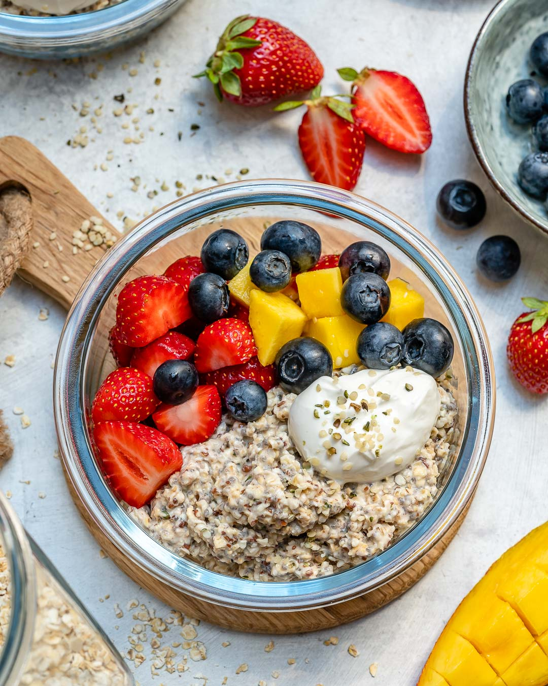

Overnight Oats

Description
This is just an alternative method of preparing oats that foregoes all the cooking that normally comes with oat-making and instead really only relies on you having a refrigerator and a few hours. Now oat-making is an artform that has long gone undervalued and I am here to bring it back to the forefront of modern civilisation. You will make these oats and you will enjoy them. Every ingredient here is completely optional you really only need the oats and everything else from there is up to you. This particular combination works great if you like chocolate and peanut butter.
Ingredients
- Oats - 1 cup
- Milk - 1 1/4 - 1 1/2 cups
- Sugar - 2 tbsp
- Cocoa Powder - 2 tbsp
- Peanut Butter(preferably with bits of peanut) - 1 spoon
- Plain greek yogurt - 1/2 cup
- Chia seeds - like a couple of spoonfuls I guess
- Chopped cranberries, walnuts, almonds(any nuts, dried fruits, even fruits like strawberry and banana) - how much ever you please
Method
- Combine dry ingredients.
- Combine dry mixture with milk and yogurt and mix well
- Leave overnight in fridge or if you don't have the patience then leave it in there for 3 hours and it should be ready to consume.